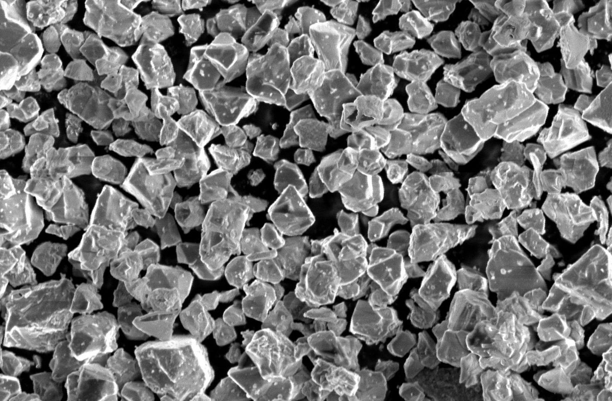

01 · Core technology01 · 핵심 기술
Single-crystal Ni-rich cathodes단결정 하이니켈 양극재
Polycrystalline NCM secondary particles crack along grain boundaries, trap residual Li, and react unevenly. We replace them with micron-scale single crystals whose crystallinity and structural ordering are tuned by sequential heat treatment — high temperature for grain growth, low temperature to relieve residual stress.다결정 NCM 이차입자는 결정립계를 따라 균열이 생기고 잔류 리튬을 가두며 불균일하게 반응합니다. 우리는 이를 마이크론급 단결정으로 대체합니다. 고온 열처리로 결정을 성장시키고 저온 열처리로 잔류 응력을 풀어 결정성과 구조 정렬을 제어합니다.
- Gen 1 — Sequential annealing of commercial co-precipitated precursors. Scaled to 40 kg/month in a roller hearth kiln; samples supplied to Samsung SDI, LG Chem and Hyundai Motor, leading to a start-up spin-off.Gen 1 — 상용 공침 전구체의 순차 열처리. 롤러하스킬로 월 40 kg 규모까지 확대, 삼성SDI·LG화학·현대자동차에 시료 공급, 스타트업 분사로 이어짐.
- Gen 2 — Precursor engineering (oxide, hollow, ill-defined intermediates) to steer nucleation and grain coarsening, extending single-crystal design to Li/Mn-rich cathodes.Gen 2 — 산화물·중공·비정형 중간체로 핵생성과 결정립 성장을 유도하는 전구체 공학. 단결정 설계를 Li/Mn-rich 양극재로 확장.
- Outcome: lower residual Li and moisture, higher electrode mechanical strength, lower gas evolution, and longer cycle life than polycrystalline counterparts.결과: 다결정 대비 낮은 잔류 리튬·수분, 높은 전극 기계적 강도, 적은 가스 발생, 긴 수명.
NCM811Grain growthCrystallinity tuning40 kg/month scale-up
Adv. Mater. 2020, 32, 2003040 · Adv. Sci. 2020, 7, 1902844 · Energy Storage Mater. 2026, 84, 104811
